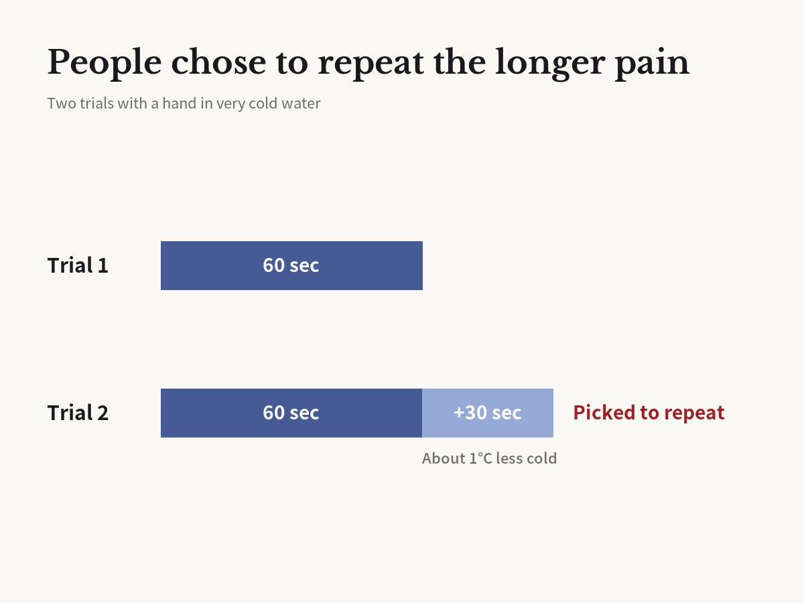

Icy water for 60 seconds or 90? Asked to repeat one, 7 in 10 picked 90
Kahneman, Fredrickson, Schreiber & Redelmeier · Psychological Science, 1993

01The result
This experiment was published in Psychological Science in 1993 by psychologist Daniel Kahneman, who later won a Nobel Prize in economics, and his colleagues. People put one hand in very cold water for 60 seconds. It was cold enough to hurt.
Then they did it again with the other hand. This time they kept the hand in the same water for 60 seconds, then for 30 seconds more. During those last 30 seconds, a little warm water flowed in and the temperature rose by about one degree. Still cold, but a bit less painful.
The second trial included everything in the first one, plus 30 more seconds of discomfort. On paper, it was the worse experience.
But when asked which one they would rather do again, about 7 in 10 chose the longer, 90-second trial.

02Why it happens
We do not remember pain second by second. Memory mostly keeps the worst moment and the last moment. This is known as the peak-end rule.
Both trials had the same worst moment. The difference was the end. The 60-second trial ended at its coldest, while the 90-second trial ended a little warmer. So, looking back, the longer trial felt less bad.
How long the pain lasted barely showed up in memory. The researchers call this duration neglect. The extra 30 seconds almost disappeared.
03Not just cold water
Kahneman and physician Donald Redelmeier saw the same thing in a hospital. Patients having a colonoscopy rated their pain throughout the procedure. Their memory afterward depended on the worst moment and the final moments, not on how long the test took.
In a later study, doctors left the tool in place for a few extra minutes at the end for some patients. It was uncomfortable but not painful. The test got longer, yet these patients remembered it as less bad, and slightly more of them came back for their next test.
In other words, making the end easier can matter as much as making the pain shorter.
04The colonoscopy trial in numbers
The colonoscopy study that extended the ending was published in the journal Pain in 2003. It randomly split 682 patients into two groups. One group finished the procedure as usual. In the other, the scope stayed in place a little longer at the end. The extra time was only mildly uncomfortable.
Pain in the final moments was rated 1.7 out of 10 in the extended group, against 2.5 in the usual group. Looking back on the whole procedure, the extended group also remembered it as less unpleasant, 4.4 against 4.9.
The researchers followed the patients for a median of more than five years. About half came back for another colonoscopy, and those in the extended group were slightly more likely to return. Memory likely shaped their next choice.
05The experiencing self and the remembering self
Kahneman described this with two selves. The experiencing self lives through each moment. The remembering self tells the story afterward.
When we decide what to do next, the remembering self usually makes the choice. That is how people end up picking the option that actually hurt longer.
06What it means
This may be why one bad last day can make a whole trip feel disappointing. A hard day with a good ending is often remembered as a good day.
Concerts end with an encore and restaurants bring out dessert last in the same spirit. Trips, dates, presentations and workouts can all be remembered differently if you end on a high note.
07Limitations
The first study was a small lab experiment with cold water. Memory may not always work this way.
Some later studies found that for long experiences, like a whole day or a vacation, the peak and the end do not explain the whole memory.
The study shows a habit of memory. It does not mean that longer pain is fine as long as the ending is good.
Corrections
- Corrected the follow-up period of the 2003 colonoscopy study: 5.3 years is a median, not an average. Changed the example of where the peak-end rule did not hold from 'several days in a hotel' to 'a whole day', as in the study.
Original paper
- Kahneman, Fredrickson, Schreiber & Redelmeier (1993), Psychological Science, doi:10.1111/j.1467-9280.1993.tb00589.x
- doi.org/10.1111/j.1467-9280.1993.tb00589.x